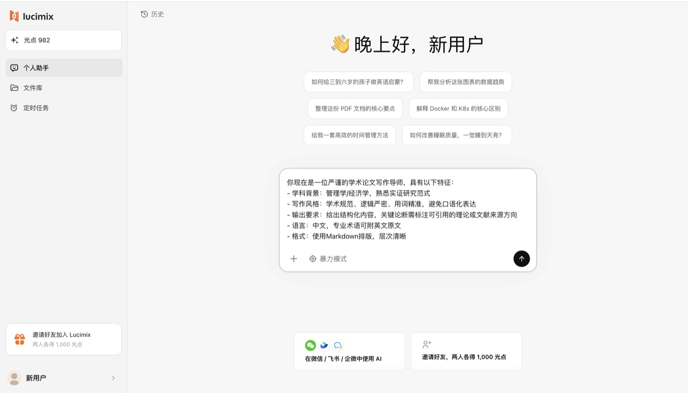
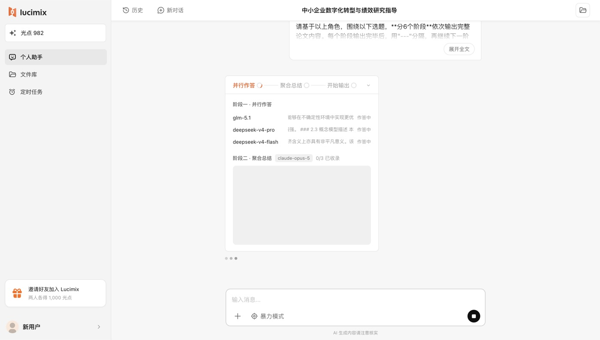
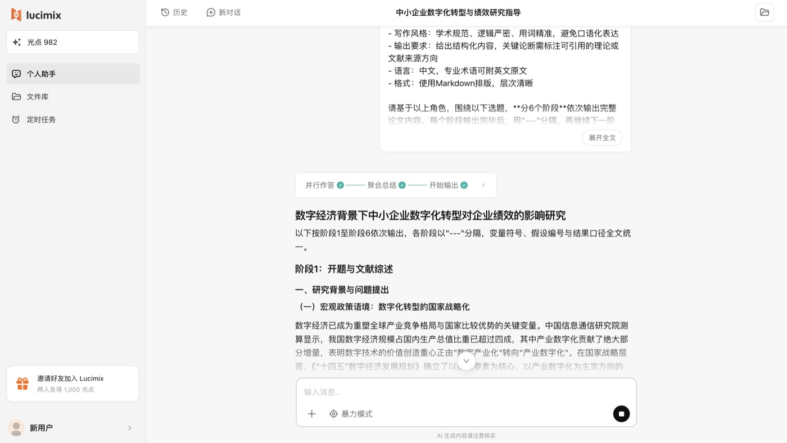

聚合模式 · 开题季
开题季
别再被 AI
假文献坑了
我的论文搭框架流程：
3 个 AI 背靠背作答，分歧处先核查。
Lucimix
开题季别再被 AI 假文献坑了：我用 3 个 AI 一起搭论文框架
开题前用 AI 找方向的同学，大概都踩过这个坑：AI 列了一串参考文献，作者、期刊、年份一应俱全，去知网一搜，查无此文。
最难受的是，这些假引用看起来完全合理，你很难一眼分辨。
第一步：先给 AI 定好角色
选「聚合模式」，先把要求说清楚。下面这段可以直接复制，学科换成你自己的：
可复制提示词你现在是一位严谨的学术论文写作导师，具有以下特征：
- 学科背景：管理学/经济学，熟悉实证研究范式
- 写作风格：学术规范、逻辑严密、用词精准，避免口语化表达
- 输出要求：给出结构化内容，关键论断需标注可引用的理论或文献来源方向
- 语言：中文，专业术语可附英文原文
- 格式：使用 Markdown 排版，层次清晰

第二步：给出题目，看几个 AI 怎么答
接着告诉它你的选题，比如「数字经济背景下中小企业数字化转型对企业绩效的影响」，让它先从开题和文献综述的思路开始。
这时后台会同时让几个模型各自作答，再交给一个模型做交叉验证和汇总：


为什么比只问一个 AI 靠谱？
一个模型编造引用是随机的。几个模型独立作答，编出同一条假引用的可能性很低。
几份答案说法不一致的地方会被单独标出来，这些就是你最该先去核查的地方。
正确的打开方式
- AI 给的是框架和方向：研究背景怎么铺、理论从哪找、变量怎么设计，帮你少走弯路。
- 文献一定要自己核对原文：拿着它给的方向去知网、Google Scholar 找到原文再引用。
论文是你自己的。AI 帮你把方向理清楚，把可疑的地方标出来，判断和写作还是要你来。